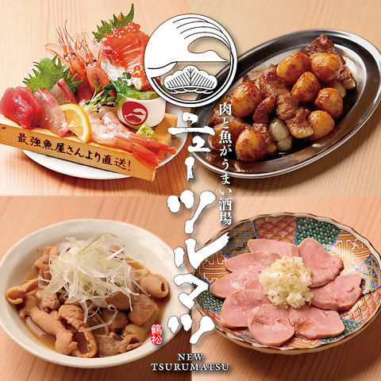
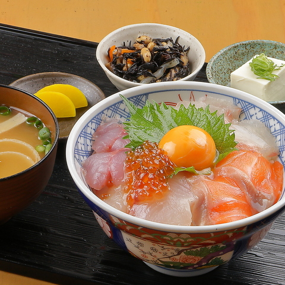
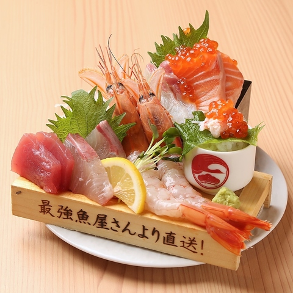
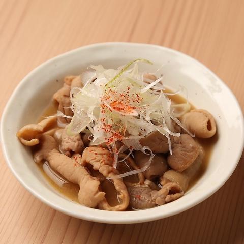
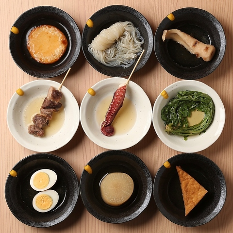
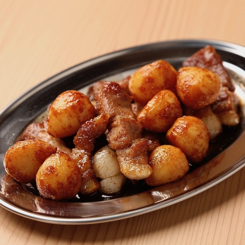
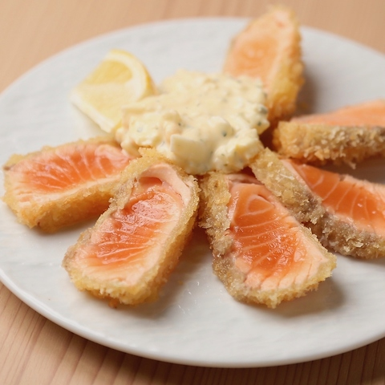
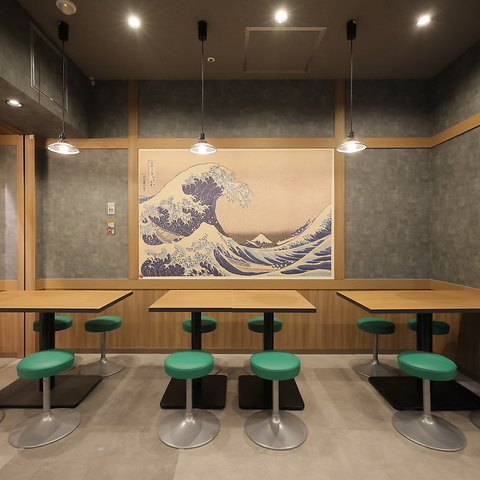
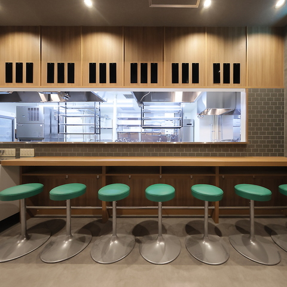
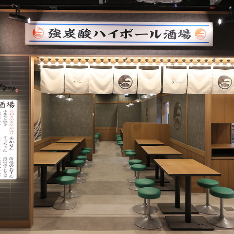

Galerie photos










Kevin, Loïc, May Nhia, Stéphanie, Estelle
Du 5 Avril au 27 Avril 2026
Izakaya viande & fruits de mer à Umeda, plus accessible qu'un buffet d'hôtel et très simple d'accès pour un groupe de 5.










New Tsurumatsu KITTE Osaka est une adresse locale plus budget qu'un buffet, tout en restant très simple pour le groupe : JR Osaka Station direct, réservation en ligne, 70 places, plats de viande, poisson, oden et service lunch.
Conversion indicative sur base 1 EUR = 183.67 JPY (BCE, 10/03/2026). Taux variable.